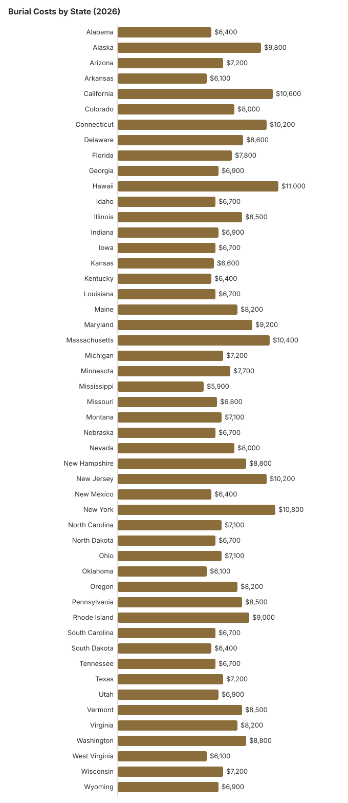

Burial Costs by State: 2026 Price Comparison
Traditional burial remains a deeply meaningful choice for many American families. However, the total cost (including the funeral service, cemetery plot, casket, vault, headstone, and associated fees) can vary by thousands of dollars between states. This guide compares burial costs across all 50 states to help you plan with realistic expectations and make informed decisions.
What a burial costs: a full burial (funeral service, plot, vault, opening and closing, and a basic marker) has a middle estimated total of $17,320 across the 50 states in our table. It is lowest in Mississippi (about $14,110) and highest in Hawaii (about $26,250). The plot alone has a middle estimate of $3,400. NFDA’s 2023 national median of $8,300 for a funeral with viewing and burial does not include any cemetery charges, which is why the totals here are higher.
Browse All 50 States
Click any state below for a detailed burial cost guide including cemetery fees, casket options, and ways to save.
State-by-State Burial Cost Table
The table below shows average burial costs for all 50 states, including the funeral service, cemetery plot, and estimated total (including vault, headstone, and opening/closing fees). Click any state for detailed pricing.
| State | Funeral Service | Cemetery Plot | Est. Total |
|---|---|---|---|
| Alabama | $6,400 | $3,200 | $15,900 |
| Alaska | $9,800 | $4,500 | $22,790 |
| Arizona | $7,200 | $3,400 | $17,320 |
| Arkansas | $6,100 | $2,800 | $14,750 |
| California | $10,600 | $5,200 | $25,160 |
| Colorado | $8,000 | $3,800 | $19,120 |
| Connecticut | $10,200 | $5,000 | $24,260 |
| Delaware | $8,600 | $4,200 | $20,660 |
| Florida | $7,800 | $3,600 | $18,480 |
| Georgia | $6,900 | $3,200 | $16,550 |
| Hawaii | $11,000 | $5,500 | $26,250 |
| Idaho | $6,700 | $3,000 | $15,910 |
| Illinois | $8,500 | $4,200 | $20,530 |
| Indiana | $6,900 | $3,200 | $16,550 |
| Iowa | $6,700 | $3,000 | $15,910 |
| Kansas | $6,600 | $2,900 | $15,590 |
| Kentucky | $6,400 | $3,000 | $15,520 |
| Louisiana | $6,700 | $3,200 | $16,290 |
| Maine | $8,200 | $4,000 | $19,760 |
| Maryland | $9,200 | $4,600 | $22,200 |
| Massachusetts | $10,400 | $5,200 | $24,900 |
| Michigan | $7,200 | $3,400 | $17,320 |
| Minnesota | $7,700 | $3,600 | $18,350 |
| Mississippi | $5,900 | $2,600 | $14,110 |
| Missouri | $6,800 | $3,100 | $16,230 |
| Montana | $7,100 | $3,200 | $16,810 |
| Nebraska | $6,700 | $3,000 | $15,910 |
| Nevada | $8,000 | $3,800 | $19,120 |
| New Hampshire | $8,800 | $4,400 | $21,300 |
| New Jersey | $10,200 | $5,000 | $24,260 |
| New Mexico | $6,400 | $2,800 | $15,140 |
| New York | $10,800 | $5,400 | $25,800 |
| North Carolina | $7,100 | $3,200 | $16,810 |
| North Dakota | $6,700 | $3,000 | $15,910 |
| Ohio | $7,100 | $3,400 | $17,190 |
| Oklahoma | $6,100 | $2,700 | $14,560 |
| Oregon | $8,200 | $3,800 | $19,380 |
| Pennsylvania | $8,500 | $4,200 | $20,530 |
| Rhode Island | $9,000 | $4,400 | $21,560 |
| South Carolina | $6,700 | $3,000 | $15,910 |
| South Dakota | $6,400 | $2,800 | $15,140 |
| Tennessee | $6,700 | $3,000 | $15,910 |
| Texas | $7,200 | $3,400 | $17,320 |
| Utah | $6,900 | $3,200 | $16,550 |
| Vermont | $8,500 | $4,200 | $20,530 |
| Virginia | $8,200 | $4,000 | $19,760 |
| Washington | $8,800 | $4,200 | $20,920 |
| West Virginia | $6,100 | $2,700 | $14,560 |
| Wisconsin | $7,200 | $3,400 | $17,320 |
| Wyoming | $6,900 | $3,200 | $16,550 |
How the Est. Total is built: each state’s funeral and plot figures are our editorial estimates, not a survey of that state’s providers. We add a casket at 30% of the funeral figure, a vault at 40% and opening and closing at 50% of the plot figure, and a $1,500 headstone. For a reality check on that last fee, 2025 city schedules charge $500 for a weekday adult burial in El Dorado, Kansas and $1,350 on weekdays to $3,050 on Sundays in Charlotte, North Carolina; that span is the $500–$3,000 range on the state pages.

VA National Cemeteries Open for Burial, by State
For a veteran, the biggest single saving on a burial is usually the grave itself: the VA National Cemetery Administration provides the gravesite, opening and closing, a liner and a government headstone or marker at no charge to eligible veterans, and a spouse can often be buried in the same site. The table lists the national cemeteries VA shows as open in each state, marking the ones that now accept only cremated remains. 9 states (Connecticut, Delaware, Hawaii, Maryland, Nevada, New Hampshire, New Jersey, Rhode Island and Vermont) have no national cemetery open for a casket burial, so the table names the state-run veterans cemeteries there instead; most were built with VA grant money, but each state sets its own residency rules and any fee for a spouse.
The funeral home, not the family, usually books the burial through the National Cemetery Scheduling Office (800-535-1117). Ask for the cemetery’s own charges in writing for anything VA does not cover, such as an upgraded marker or a private plot for a family member who does not qualify.
| State | Veterans cemeteries |
|---|---|
| Alabama | Alabama National Cemetery (205-665-9039) Fort Mitchell National Cemetery (334-855-4731) |
| Alaska | Fort Richardson National Cemetery (907-384-7075) Sitka National Cemetery (907-384-7075) |
| Arizona | National Memorial Cemetery of Arizona (480-513-3600) Prescott National Cemetery (cremated remains only) (928-445-4860) |
| Arkansas | Fayetteville National Cemetery (479-442-2566) Fort Smith National Cemetery (479-783-5345) |
| California | Bakersfield National Cemetery (661-867-2250) Los Angeles National Cemetery Annex (cremated remains only) (310-268-4675) Miramar National Cemetery (858-658-7360) Riverside National Cemetery (951-653-8417) Sacramento Valley National Cemetery (707-693-2460) San Joaquin Valley National Cemetery (209-854-1040) |
| Colorado | Fort Logan National Cemetery (303-761-0117) Fort Lyon National Cemetery (719-391-6920) Pikes Peak National Cemetery (719-391-6920) |
| Connecticut | State-run: Connecticut State Veterans Cemetery |
| Delaware | State-run: Delaware Veterans Memorial Cemetery - New Castle County; Delaware Veterans Memorial Cemetery - Sussex County |
| Florida | Barrancas National Cemetery (850-453-4108) Bay Pines National Cemetery (cremated remains only) (727-319-6479) Cape Canaveral National Cemetery (321-383-2638) Florida National Cemetery (352-793-7740) Jacksonville National Cemetery (904-766-5222) Sarasota National Cemetery (877-861-9840) South Florida National Cemetery (561-649-6489) Tallahassee National Cemetery (850-402-8941) |
| Georgia | Georgia National Cemetery (770-479-9300) |
| Hawaii | National Memorial Cemetery of the Pacific (cremated remains only) (808-532-3720) State-run: Hawaii State Veterans Cemetery; Kauai Veterans Cemetery; Lanai Veterans Cemetery; East Hawaii Veterans Cemetery; Maui Veterans Cemetery; Molokai Veterans Cemetery; West Hawaii State Veterans Cemetery |
| Idaho | Snake River Canyon National Cemetery (208-732-7499) |
| Illinois | Abraham Lincoln National Cemetery (815-423-9958) Camp Butler National Cemetery (217-492-4070) Danville National Cemetery (217-554-4550) Fort Sheridan National Cemetery (cremated remains only) (224-610-7296) Mound City National Cemetery (618-694-1391) Rock Island National Cemetery (309-784-0000) |
| Indiana | Crown Hill National Cemetery Annex (cremated remains only) (317-916-5460) Marion National Cemetery (765-674-0284) New Albany National Cemetery (cremated remains only) (502-893-3852) |
| Iowa | Keokuk National Cemetery (319-524-5193) |
| Kansas | Fort Leavenworth National Cemetery (cremated remains only) (913-684-4348) Fort Scott National Cemetery (913-212-4612) Leavenworth National Cemetery (913-727-1376) |
| Kentucky | Camp Nelson National Cemetery (859-885-5727) Lebanon National Cemetery (270-692-3390) Mill Springs National Cemetery (859-885-5727) |
| Louisiana | Louisiana National Cemetery (225-654-1988) Port Hudson National Cemetery (cremated remains only) (225-654-1988) |
| Maine | Acadia National Cemetery (508-563-7113) |
| Maryland | Baltimore National Cemetery (cremated remains only) (410-644-9696) State-run: Cheltenham Veterans Cemetery; Crownsville Veterans Cemetery; Eastern Shore Veterans Cemetery; Garrison Forest Veterans Cemetery; Rocky Gap Veterans Cemetery |
| Massachusetts | Massachusetts National Cemetery (508-563-7113) |
| Michigan | Fort Custer National Cemetery (269-731-4164) Great Lakes National Cemetery (248-328-0386) |
| Minnesota | Fort Snelling National Cemetery (612-726-1127) |
| Mississippi | Biloxi National Cemetery (228-388-6668) Corinth National Cemetery (901-386-8311) Natchez National Cemetery (601-445-4981) |
| Missouri | Jefferson Barracks National Cemetery (314-845-8320) Springfield National Cemetery (cremated remains only) (417-881-9499) |
| Montana | Yellowstone National Cemetery (406-647-2746) |
| Nebraska | Fort McPherson National Cemetery (308-582-4433) Omaha National Cemetery (402-253-3949) |
| Nevada | State-run: Northern Nevada Veterans Memorial Cemetery; Southern Nevada Veterans Memorial Cemetery |
| New Hampshire | State-run: New Hampshire State Veterans Cemetery |
| New Jersey | Finn's Point National Cemetery (cremated remains only) (215-222-7510) State-run: Brigadier General William C. Doyle Veterans Memorial Cemetery |
| New Mexico | Fort Bayard National Cemetery (505-988-6400) Santa Fe National Cemetery (505-988-6400) |
| New York | Bath National Cemetery (607-664-4853) Calverton National Cemetery (631-727-5410) Gerald B. H. Solomon Saratoga National Cemetery (518-581-9128) Long Island National Cemetery (cremated remains only) (631-454-4949) St. Albans National Cemetery (cremated remains only) (718-298-8545) Western New York National Cemetery (585-297-1300) Woodlawn National Cemetery (cremated remains only) (607-732-5411) |
| North Carolina | Salisbury National Cemetery Annex (704-636-2661) |
| North Dakota | Fargo National Cemetery (701-451-4650) |
| Ohio | Dayton National Cemetery (937-268-2221) Ohio Western Reserve National Cemetery (330-335-3069) |
| Oklahoma | Fort Gibson National Cemetery (918-478-2334) Fort Sill National Cemetery (580-492-3200) |
| Oregon | Eagle Point National Cemetery (541-826-2511) Fort Stevens National Cemetery (503-273-5250) Roseburg National Cemetery Annex (541-677-3152) Willamette National Cemetery (503-273-5250) |
| Pennsylvania | Indiantown Gap National Cemetery (717-865-5254) National Cemetery of the Alleghenies (724-746-4363) Washington Crossing National Cemetery (215-222-7510) |
| Rhode Island | State-run: Rhode Island Veterans Memorial Cemetery |
| South Carolina | Beaufort National Cemetery (843-524-3925) Florence National Cemetery Annex (843-669-8783) Fort Jackson National Cemetery (803-699-2246) |
| South Dakota | Black Hills National Cemetery (605-347-3830) |
| Tennessee | Chattanooga National Cemetery (423-855-6590) Knoxville National Cemetery (cremated remains only) (423-979-3535) Memphis National Cemetery (cremated remains only) (901-386-8311) Mountain Home National Cemetery (423-979-3535) Nashville National Cemetery (cremated remains only) (615-860-0086) |
| Texas | Dallas-Fort Worth National Cemetery (214-467-3374) Fort Bliss National Cemetery (915-564-0201) Fort Sam Houston National Cemetery (210-820-3891) Houston National Cemetery (281-447-8686) San Antonio National Cemetery (cremated remains only) (210-820-3891) |
| Utah | Southern Utah National Cemetery (435-267-2710) |
| Vermont | State-run: Vermont Veterans Memorial Cemetery |
| Virginia | Culpeper National Cemetery (540-825-0027) Danville National Cemetery (cremated remains only) (704-636-2661) National Memorial Cemetery at Quantico (703-221-2183) |
| Washington | Tahoma National Cemetery (425-413-9614) Vancouver Barracks National Cemetery (cremated remains only) (503-273-5250) |
| West Virginia | West Virginia National Cemetery (304-265-2044) |
| Wisconsin | Northwoods National Cemetery (906-396-9276) |
| Wyoming | Cheyenne National Cemetery (307-778-7316) |
National cemetery status as listed by VA at cem.va.gov, and state veterans cemeteries as carried on each state’s burial page on this site; status can change as cemeteries fill or open, so confirm with VA before planning.
Burial Pages Families Use Most
Florida, Ohio, Pennsylvania, Tennessee and Georgia get the most burial searches on this site, and the veterans page answers the question we hear most about free graves:
- Burial costs in Florida
- Burial costs in Ohio
- Burial costs in Pennsylvania
- Burial costs in Tennessee
- Burial costs in Georgia
- VA burial benefits for veterans
Understanding Burial Costs
Burial costs include more line items than most families expect. Beyond the funeral home's service fee, you will likely encounter charges for the cemetery plot, a burial vault or grave liner, opening and closing the grave, a headstone or marker, and perpetual care fees. These cemetery charges alone can add $3,000 to $8,000 to the funeral home bill.
The most effective way to manage burial costs is to get itemized pricing from both the funeral home and the cemetery before committing. Under the FTC Funeral Rule, funeral homes must provide a General Price List on request. Cemeteries are not covered by the FTC rule but most will provide their price sheet upon request. Comparing prices between 2-3 providers can save families significant money.
Frequently Asked Questions
What is the average burial cost in the US?
NFDA's 2023 national median for a funeral with viewing and burial is $8,300, and that figure leaves out the cemetery. Once a plot, vault, opening and closing, and a basic headstone are added, the estimated totals in the table above run from about $14,110 in Mississippi to about $26,250 in Hawaii.
Which states have the cheapest burial costs?
In our estimates the lowest full-burial totals are in Mississippi (about $14,110), Oklahoma and West Virginia (about $14,560 each), and Arkansas (about $14,750). The funeral service alone is lowest in Mississippi at about $5,900; skipping the viewing with a direct burial cuts the bill much further.
Is a burial vault required?
Burial vaults are required by most cemeteries, as a matter of cemetery policy, to prevent ground settling, though they are rarely required by state law. Grave liners are a less expensive alternative. Always ask the cemetery about their specific requirements.
What is the cheapest way to be buried?
Direct burial (without a viewing or ceremony) is the most affordable burial option. Green burial, which skips embalming and uses a biodegradable container, is another cost-effective choice. Both usually cost far less than a traditional funeral with burial.
Disclaimer: These are planning estimates, not a quote or professional advice. Full disclaimer.